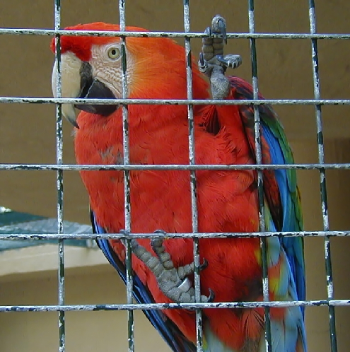
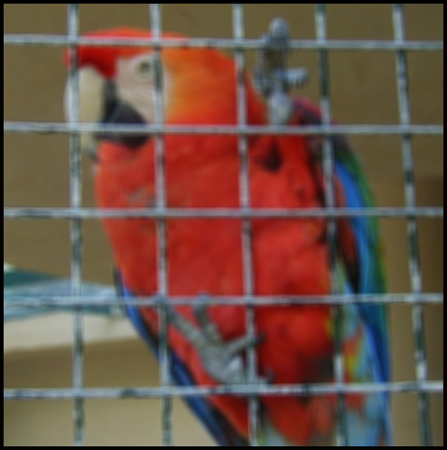
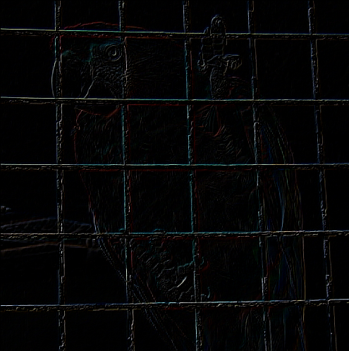
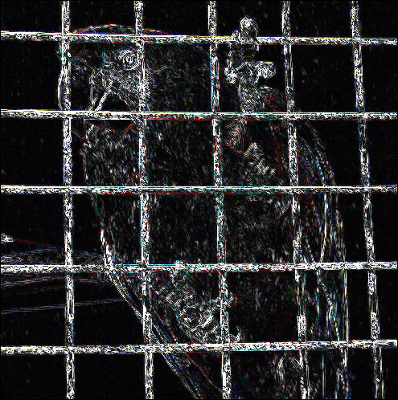
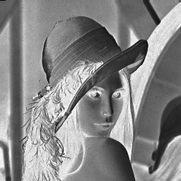
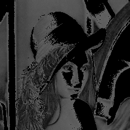
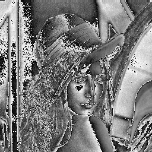

Home
Image Processing Library
Developers
- Luis Felipe Rincón Riveros. B25530
- Erick Eduarte Rojas. B22305
- Fabián Meléndez Bolaños. B24056
About the Project
This project proposes to create a library in the c++ programming language, which will perform basic functions of image filtering. Especially monochromatic, but it is also planned to be implemented for RGB images.
An image is the set of elements of a two-dimensional function, where (x, y) are spatial coordinates, each pair of coordinates also has an amplitude of f, called intensity or gray level of the image. If the values of (x, y) and amplitude are all finite, we say that the image is a digital image. Digital images are composed of picture elements which commonly are called pixels.
The digital image processing refers to the set of techniques applied to digital images in order to improve quality or facilitate the provision of information. Some of the image processing goals are: smooth the image to remove noise, to enhance the edges and detecting the edges, etc. Usually to achieve them using filters, which can be in the space domain and in the frequency domain. Among the main applications that have digital image processing is the improvement of pictorial information for human interpretation and facilitate the data storage, transmission and representation for autonomous machine perception.
The focus of this work is to develop a library that is able to apply some of the basic functions of digital processing, in order to apply a filter to an image, to facilitate the understanding and management of information in them.
Features
In this library, you'll find a set of filters and functions, concerning some logic and arithmetic functions, as smoothing spatial filters and sharpening spatial filters, also some basic transformations and a few histogram functions.
Logic and Arithmetic Functions
Addition and Subtraction
These two functions add or subtract the the pixel values of two images, in case of exceeding the maximum value (255), the values are adjusted to 255, and if the new values are less than 0, the new pixel value will be the absolute value. Subtraction could be used to saw the differences between two images.
Division
This function divides each pixel values by a parameter. Could be used to smooth an image or increase the intensity of the image.
Smoothing Spatial Filters
Average
The average filter uses a kernel, a small part of the image and subtracs the pixel values. With those values it calculates the average and sets it into the center pixel of the kernel. This filter is used smooth the picture by reducing the strong change of pixel values on the surroundings.
Median
The median filter uses a kernel to calculate the median of the pixel values, in this way the intensity is homogenized into the kernel. This filter allows to reduce the noise on an image , for example the salt&pepper effect.
Modal
The modal filter calculates the modal value of a certain pixel values subtracted by the kernel, it means that the central pixel is set with the most frequent value. If all the values are different this filter sets the average value
Gaussian
The Gaussian filter is used to reduce noise by blurring the picture. It filters the high frequencies applying a convolution of the signal with a Gaussian function of the image. This convolution consist in multiplying two images (the image and the Gaussian kernel) with different dimensions to produce one with the same size of the original. This process returns a series of pixel with a weight that depends of their own neighborhood and a certain standard deviation, those parameter defines the Gaussian kernel.
Sharpening Spatial Filters
The principal objective of sharpening is to highlight fine detail in an image or to enhance detail that has been blurred, either in error or as a natural effect of a particular method of image acquisition. Uses of image sharpening vary and include applications ranging from electronic printing and medical imaging to industrial inspection and autonomous guidance in military systems.
Since averaging is analogous to integration, it is logical to conclude that sharpening could be accomplished by spatial differentiation. Fundamentally, the strength of the response of a derivative operator is proportional to the degree of discontinuity of the image at the point at which the operator is applied. Thus, image differentiation enhances edges and other discontinuities (such as noise) and de-emphasizes areas with slowly varying gray-level values.
Contrast by Difference
Works subtracting the pixel ahead against the pixel behind in each pixel of the image, can be vertical, or horizontal. Enhancing vertical or horizontal borders en each case, and de-empisizes the areas were there are few variation on the pixels intensity. In this library you can find two filters applying this principle, Horizontal Border's and Vertical Border's filters.
Laplace borders enhancement
These filters enhances the edges in all directions (the results obtained can be considered as a "sum" of those obtained after applying all of the above type models). This time working with the second derivative, giving better results, despite the increased noise that occurs in the image.
Edge Enhancement by displacement
Subtracts from the original image a displaced copy, therefore it is possible to locate and highlight the existing edges to be obtained.
Directional Gradient edge enhancement
Used to highlight and highlight with greater precision the edges which are located in a particular direction. Work with the intensity changes between adjacent pixels.
Prewitt Filters
Technically, it is a discrete differentiation operator, computing an approximation of the gradient of the image intensity function. At each point in the image, the result of the Prewitt operator is either the corresponding gradient vector or the norm of this vector. The Prewitt operator is based on convolving the image with a small, separable, and integer valued filter in horizontal and vertical direction and is therefore relatively inexpensive in terms of computations. On the other hand, the gradient approximation which it produces is relatively crude, in particular for high frequency variations in the image. The Prewitt operator was developed by Judith M. S. Prewitt.
Basic Transformations
Dynamic range dilatation
The dilatation of the dynamic range is used in images poorly contrasted, to stand out the range of intensity that predominates in the image. This method uses three ranges of pixel values, and applies a different transformation to each.
Inverse of an image
The inverse of an image calculates the substraction of all the pixel values and the maximum value (255), and set the new image with these pixel values.
Logarithmic Transformation
Applies a transformation of the form v(x,y) = c * log(u(x,y) + 1), where c is a constant and log is the natural logarithm, u(x,y) is the pixel from the original image, and v(x,y) is the pixel in the resulting image.
Maximum
Assigns the highest value of the neighborhood of the original image to the resulting image. Reduces noise in some areas.
Minimum
Assigns the highest value of the neighborhood of the original image to the resulting image. Reduces noise in some areas.
Power-law transformation.
Applies a power-law transformation of the form: v(x,y) = k * (u(x,y))^y. Where y is a parameter and k is a constant calculated to normalize the result.
Order Statistics
Sorts the pixels in ascending order in the neighborhood and assigns the input that is given as parameter.
Histogram Processing
Histogram of an Image
You can obtain any image histogram. In statistics, a histogram is a graphical representation of the distribution of data. It is an estimate of the probability distribution of a continuous variable. A histogram is a representation of tabulated frequencies, shown as adjacent rectangles, erected over discrete intervals. In an image a histogram is a type of histogram that acts as a graphical representation of the tonal distribution in a digital image. It plots the number of pixels for each tonal value. By looking at the histogram for a specific image a viewer will be able to judge the entire tonal distribution at a glance.
Histogram Ecualization
Is a method in image processing of contrast adjustment using the image's histogram, This method usually increases the global contrast of many images, especially when the usable data of the image is represented by close contrast values. Through this adjustment, the intensities can be better distributed on the histogram. This allows for areas of lower local contrast to gain a higher contrast. Histogram equalization accomplishes this by effectively spreading out the most frequent intensity values. The method is useful in images with backgrounds and foregrounds that are both bright or both dark.
Autocovariance
The covariance, calculates the covariance matrix of an image. This function calculates something similar to the function below. It calculates the variation between two series, one is the normal one, and the other is displaced by two parameters $\Delta x$ & $\Delta y$. For an image it its calculated for a neighborhood.
Plot histogram equalization
This function compute the equalization of the histogram of an image, and plot it.
Noise
Gaussian Noise
Applies the Gaussian noise to an image. This additive noise is characterized because the final pixel values represents the ideal values plus certain error. It produces little variations on the image, in fact, the energy spectrum is constant for all the frequencies, it means the intensity of all the pixels is altered.
Salt&Pepper
Applies salt and pepper to an image. Gives to an images pixel two possible values of noise , the one of salt which are the highest intensity (white-salt) and the lowest intensity (black-pepper).It receives as a parameter the percentage of noise wanted.
Other transformations
Kirsch masks
One of the methods to detect the edges is to apply the Kirsch masks, there are 8 Kirsch masks, to detect the edges in 8 different directions, the masks that apply the same filter in different directions are named steering filters or oriented filters.
Freeman masks
The Freeman masks are a group of masks that apply the same filter rotated, a steering filter, steerable filters may be designed in quadrature pairs to allow adaptive control over phase as orientation, each of the Freeman masks allows to detect borders in different directions.
Order and statistics filter
Variance
This function calculates the variance of a kernel values and the applies to the image. In probability and statistics, the variance is a measure of how far a set of numbers is spread out. In other words, if the variance is zero all the values are equals; if the variance is small, it means the vales are very likely and close to the mean; and if the variance is high, that indicates that the data points are very spread out from the mean form each other.
Maximum and Minumun Value Filters
These are pretty simple filters, they roam the pixel's neighborhood, and choose the maximun or minimun value. Can be used as smoothing filters, but their results arent exactly the ones of an smoothing filter, yet they can help to reduce noise. These filters are particular cases of the order-statistics filter.
RGB to gray scale
Converts an RGB image to gray scale.The Image library uses this conversion: f(x,y)= 0.11R+0.56G + 0.14B Where f is the intensity of the pixel on the gray scale and R,G and B the pixel values on the different channels.
Closer neighborhood interpolation
This function applies the closer neighborhood interpolation.The objective is to return a bigger image filling the unknown pixels with the values estimated. The interpolation of the closer neighborhood consist in basically make bigger the pixel by considering its value.
Coorrelogram
Its the Image co-ocurrence matrix.It is a matrix or distribution that is defined over an image to be the distribution of co-occurring values at a given offset.
Requirements & Installation
This library was designed to work on linux distributions, using the g++ compiler.
sudo apt-get install g++
Also, in order to automatically compile this library, you'll need the make program.
sudo apt-get install make
This project documentation uses an automatic tool called doxygen, so in order to have access to this documentation you'll need doxygen and some latex dependencies.
sudo apt-get install doxygen texlive texlive-pictures pdflatex
For installing the library you can clone this repository
in a local directory, the enter the Project sub-directory, then run make or make all. The project will be automatically compiled and the documentation will be created.
To compile your own programs, just link them to some system libraries, and the Imagelib compiled file.
g++ -o "MyProgram__".exe "MyProgram__".cpp ../build/image.o -O2 -L/usr/X11R6/lib -lm -lpthread -lX11
Tutorial:
Loading, creating, gets, sets and saving images
This tutorial will demonstrate how to load and create images, as well as handle it. Let's start loading an image from an specific directory by just calling one of the constructors of the class Image.
First you need to include the header of image lib:
#include "../include/image.hh"
Then load the image as an Image object by passing as parameter the location of the image(lena.ppm)
Image imagen ("../../Multimedia/lena.pgm");
You can also create an Image object by declaring the width, height, depth, spectrum and the pixel value you want to fill the picture. In this tutorial we create an image of 256x256 with depth=1, sprectrum=3 and filled with a pixel value of 220:
Image image_created (256, 256, 1, 3, 220);
Now that the image was created you can manage its characteristics by the sets and gets. It is possible to get the width, height, depth, spectrum and the pixel value you want, and also set this last one:
//Gets
//"Image_object".get_width();
image_created.get_width();//"Image_object".get_height(); image_created.get_height();
//"Image_object".get_depth(); image_created.get_depth();
//"Image_object".get_spectrum();
image_created.get_spectrum();//"Image_object".get_pixel_value(x,y,z,c); image_created.get_pixel_value(100, 150, 1, 1);
All these gets return an unsigned int except the one of pixel value wich returns an unsigned char. In this tutorial, the function set pixel value is used to set pixels with value 0. We used a scope to change only the diagonal of the image. This is how is called:
//"Image_object".set_pixel_value(x,y,z,c,pixel value); image_created.set_pixel_value(i, i, 1, 1, 0);
The last thing to do is to save the image you created on the current directory, so just call the save function like the tutorial:
// "Image_object".save("picture_name"); image_created.save("image_created.ext");
Smoothing and Sharpening Spatial Filters
This second tutorial will guide you through the usage of smoothing and spatial filters. You can find this tutorial in the test directory of our library, in the Tutorial2.cpp file. First, in any file that uses our library, you must include the image.hh file.
#include ”../include/image.hh”
Now we’re gonna explain the rest of the code. First we create the Image object form the file, and name it parrot, the we display it.
Image parrot (”../../Multimedia/parrot_original.ppm”);
parrot . display ( ” Parrot Original ” ) ;
The image that we displayed will look like the one in figure 1

We can apply several filters to an image. A filter returns a Image object with the corresponding filter applied to the image. For example, applying an average filter to the parrot image (it receives a int that corresponds to the intensity of the average filter. In this case its 3). Then we display it.
Image smoothed_parrot = parrot.filter_average(3); smoothed_parrot.display(”Smoothed Parrot”);
The result of the given filter, should look like the one on figure 2.

We can also apply a filter, and display it without storing it in a Image object. Like this:
(parrot.filter_gaussian(3,3)).display(”Gaussian”);
We can also just save the image, without storing it in an Image object like this:
(parrot.filter_median(0)).save(”.../.../Multimedia/Parrot_median.jpg”);
The filters that we have applied are smoothing filters, that as you can see dont modify the images alot, just, as the name says, smooth it. Now we will ap- ply some sharpening filters that enhance some details in the image, for example borders and noise. We can enhance edges, by displacement. The parameters of this function are the horizontal, and vertical displacement in pixels.
Image displaced = parrot.filter_edge_enhacement_displacement(1,1) ; displaced.display(”Displaced”);
The result looks like the image on figure 3

We can add noise to the image, using the gaussian noise function. And apply a Laplacian filter, that acts as a sharpening filter.
parrot.gaussian_noise(2); Image filtered = parrot.filter_Laplacian(); filtered.display(”Laplacian”);
The result of this Laplacian filter looks like the image on figure 4.
We can overwrite an Image objec with another, in this case with a horizontal borders enhance filter:
filtered = parrot.filter_horizontal_borders(); filtered.display(”Horizontal Borders”);

Dot to Dot transformations
This third tutorial will guide you through the usage of dot to dot transfor- mations. You can find this tutorial in the test directory of our library, in the Tutorial3.cpp file. First you need to include the header of image lib:
#include ”.../include/image.hh”
After that we create the Image object form the file, and name it lena, the we display it.
Image lena (”../../Multimedia/lena.pgm”); lena.display(”Lena_Original”);
The image that we displayed will look like the one in figure 5
We can apply different dot to dot transformations, like the inverse function, to invert the intensity values of the pixels. To use it, first we need to create the target image object, after call the function, and we can choose if save the image or only display it.
Image lena_inverted(256, 256, 1, 1,168); lena_inverted = lena.inverse(); lena_inverted.save (”lena_inverse.jpg”); lena_inverted.display(”lena inverted”);
And the result looks like the image on the figure 6

Also we can apply the dynamic range dilatation filter, is used in images poorly contrasted, and the interest is to highlight the range with more intense pixels. First we create the target image, after apply the filter, and save or display the result. This function recives two unsigned char that represents the cutoff pixel values, and 3 doubles that represents the parameters of the transformation.
Image lena_dilatated(256,256,1,1,168); lena_dilatated = lena.filter_dynamic_range_dilatation(50,150,1,0.5,1.1) ; lena_dilatated.save(”lenadilatated.jpg”); lena dilatated.display(”lena dilatated”);
The result looks like the image in the figure 7

Also is the function logarithmic transformation, that transforms all the pixel values to the form f = k ∗ log(pixel). To use it first we create the target image like in the other functions, after we call the function and save in the target object, and choose to save as image or display it.
Image lena_log(256,256,1,1,168); lena_log=lena.log_transformation(); lena log.display (”lena log”); lena_log.save(”lena_log.jpg”);
The logarithmic image can looks like the figure 8
Other of our dot to dot transformations is the Power Law Transformation, this function transforms the pixel values to the form f = k ∗ pixelg amma, with gamma a parameter of type double, that the user gives to the function. To use it we create the target image, after we call the function specifying the order (gamma), and save or display it.
Image lena_power(256,256,1,1,168); lena_power = lena.power_law_transformation(1.1); lena_power.display(”lena power”); lena_power.save (”lena_power_law.jpg”);
And the result looks like the figure 9

The last of our dot to dot transformations is the color slicing, in this function the pixel values between color1 and color2 set the new pixel value same as the original, and the other pixels set to the neutral color(in ths function color1 must be lower than color2). First we define the target image and the parameters color1, color2 and neutral (these parameters are arrays because if the imaga spactrum is more than 1, we need to define the colors in all the layers), after we call the function, and save/display the image.
Image lena_color_slicing(256,256,1,1,168); unsigned char color1[]={23}; unsigned char color2[]={130}; unsigned char neutral[]={50} ; lena_color_slicing = lena.color_slicing(color1, color2, neutral); lena_color_slicing.display(”Lena Color Slicing”); lena_color_slicing.save(”lena_color_slicing.jpg");
The result can looks like the figure 10
Help
- Help
- For more information, check the Proyecto\doc directory in our repository, you'll find a Technical Report, the Tutorials, and a reference manual.
References
Gonzalez, Rafael C. & Woods, Richard E. (2002) . Digital Image Processing . (2nd Ed.). Prentice Hall, New Jersey.
González, R.C. & Wintz, P. (1996), Procesamiento digital de imágenes. Addison Wesley, Tema 3,4, pg 89-269.